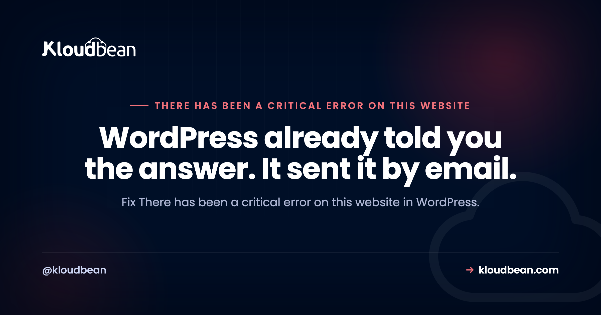

There Has Been a Critical Error on This Website: Find the Exact Cause

"There has been a critical error on this website" is WordPress telling you a PHP fatal error stopped the page from rendering. It replaced the old white screen of death, and the replacement is a genuine improvement for one reason people almost always miss: alongside that message, WordPress sends an email to your admin address containing the exact file and line number that failed, plus a link to log in with the broken plugin paused. Most of the guides on this error walk you through disabling plugins one by one. Check your email first. The answer is often sitting in it.
Check the email WordPress sent to your site admin address, since it names the exact file and line that caused the fatal error and includes a recovery mode login link. If there is no email, enable WP_DEBUG_LOG in wp-config.php and reload the page, then read wp-content/debug.log for the failing file. That file tells you which plugin or theme is responsible. The three most common causes are a plugin update, a PHP version change, and an exhausted memory limit.
Step 1: read the email WordPress already sent
Since WordPress 5.2, fatal error protection sends a message to the administration email address whenever this happens. The subject line names your site and the body contains something close to the following:
An error of type E_ERROR was caused in line 142
of the file /wp-content/plugins/some-plugin/includes/class-handler.php.
Error message: Uncaught Error: Call to undefined function wp_get_object_terms()That is the whole diagnosis in three lines: the file, the line, and the reason. The plugin directory in that path is your culprit.
The email also contains a recovery mode link. Following it logs you into the admin area with the offending plugin paused, so you can work normally rather than through SFTP. This is the fastest route back to a working dashboard and it is the feature almost nobody uses.
Two reasons the email does not arrive, both worth knowing. The admin address is often an old one nobody reads, and you can check what it is set to directly in the database or with WP-CLI. And plenty of servers cannot send mail reliably at all, which is a separate problem worth fixing but not today's.
wp option get admin_email
wp option update admin_email you@example.comStep 2: if there is no email, make WordPress write a log
Add these lines to wp-config.php, above the line that requires wp-settings.php:
define( 'WP_DEBUG', true );
define( 'WP_DEBUG_LOG', true );
define( 'WP_DEBUG_DISPLAY', false );
@ini_set( 'display_errors', 0 );WP_DEBUG_DISPLAY set to false matters on a live site. It keeps the errors out of your visitors' browsers while still recording them. Reload the broken page, then read the log:
tail -50 wp-content/debug.logYou are looking for a line beginning PHP Fatal error. Everything above it is usually noise from deprecation notices. The four you will actually see:
| Log line | What it means | Fix |
|---|---|---|
Uncaught Error: Call to undefined function | Code calling something that no longer exists | Usually a plugin behind on a PHP or WordPress change |
Allowed memory size of N bytes exhausted | PHP ran out of memory | Raise the limit, then find what is loading so much |
Uncaught TypeError: ... null given | PHP 8 strictness rejecting what PHP 7 tolerated | Update the plugin, or move back a PHP version |
Parse error: syntax error, unexpected | Broken PHP was saved into a file | Revert the last edit to that exact file |
Turn debugging back off when you are finished. A debug.log left growing in a web-accessible directory is both a disk problem and an information leak.
Step 3: use the timing to shortcut the diagnosis
When did it start? This narrows things faster than any elimination process.
| It broke | Almost certainly | Do this first |
|---|---|---|
| Right after updating a plugin | That plugin | Roll it back or deactivate it |
| Right after changing PHP version | A plugin or theme incompatible with the new PHP | Switch PHP back, then update the plugin |
| Right after editing a theme file | A syntax error in your edit | Revert the file |
| Right after adding a code snippet | The snippet | Remove it from functions.php or the snippets plugin |
| Only on one page or in the admin | A plugin active only on that path | Read the log for that request specifically |
| Intermittently, under traffic | Memory exhaustion | Check the memory limit and what is consuming it |
| With no change at all | An auto-update ran | Check update history and core version |
That last row catches more people than it should. WordPress applies minor core updates and, depending on configuration, plugin updates automatically. "Nobody touched it" is frequently true of the humans and not of the site.
Step 4: isolate it properly with WP-CLI
If you are locked out and have no clear file to blame, bisect the plugins. WP-CLI over SSH is dramatically faster than renaming folders over SFTP, and it works even when the admin area will not load:
# What is actually running?
wp plugin list --status=active
# Turn everything off. If the site comes back, it is a plugin.
wp plugin deactivate --all
# Reactivate in batches, checking the site between each
wp plugin activate woocommerce
wp plugin activate some-other-pluginIf the site is still broken with every plugin off, move to the theme:
wp theme activate twentytwentyfourAnd if it is broken with default theme and no plugins, suspect core files:
wp core verify-checksumsThat last command compares your core files against the official checksums and reports anything modified or missing. It is the fastest way to rule core in or out, and a genuinely modified core file is worth taking seriously as a possible compromise rather than just repairing quietly.
Without SSH, the equivalent is renaming directories so WordPress cannot load them:
# Force-deactivate a single suspect plugin
mv wp-content/plugins/suspect-plugin wp-content/plugins/suspect-plugin.off
# Or all of them at once
mv wp-content/plugins wp-content/plugins.off && mkdir wp-content/pluginsThe PHP version cause, which deserves its own section
A large share of these critical errors appear the moment someone changes PHP version, and the connection is not always obvious because the change may have been made days earlier by a host or an automated update.
PHP 8 is much stricter than PHP 7. Things that were warnings became fatal errors. Passing null where a string is expected, relying on removed functions, or using old constructor syntax all now stop execution outright. A plugin that has not been updated in three years will often fail immediately on PHP 8.
wp cli info | grep "PHP"
php -vThe correct sequence, and the order matters: switch PHP back to the version that worked, confirm the site returns, then update the plugins and theme, then move PHP forward again and test. Trying to do it in the other order means debugging on a site that is down.
My honest opinion on this: staying on an old PHP version indefinitely is not a solution, because you end up unsupported and slower. But rushing a version bump on production without testing is how sites break at inconvenient times. Change PHP on a staging copy, click through the site, then apply it live.
Memory exhaustion, and the honest fix
If your log says Allowed memory size of 134217728 bytes exhausted, PHP hit its ceiling. The quick change is a larger limit:
define( 'WP_MEMORY_LIMIT', '256M' );
define( 'WP_MAX_MEMORY_LIMIT', '512M' );That will very likely bring the site back, and it is worth being clear that it treats the symptom. Something requested more memory than a page render should need. Common culprits are an import or export running inside a web request, a query pulling every post into memory at once, a page builder rendering a very large layout, and an image operation on a huge upload. If you raise the limit and it fills again, the limit was never the problem.
Reframing what this message actually is
Worth saying, because it changes how alarming this feels. The critical error screen is protection working rather than a deeper failure. Before WordPress 5.2 the same fatal error gave you a blank white page with no information and no way in. Now you get a message, an email with the file and line, and a login link that pauses the broken plugin. The error is not worse than it used to be. You are simply being told about it.
How to stop meeting this error
Nearly every cause traces back to a change applied straight to a live site: a plugin update, a PHP version bump, a theme edit, a snippet pasted into functions.php. The fix is procedural rather than technical.
This is what staging is for, and it is a confirmed part of the Kloudbean platform for WordPress and Laravel. Copy the site, apply the update there, click through the pages that matter, then push it live. Automatic backups mean that when something does slip through, rolling back is a decision rather than a project. PHP version is a setting you control per application, so testing a version change is straightforward rather than a support ticket. And because servers are managed, memory limits and PHP configuration are maintained rather than being whatever was set when the server was built.
The boundary, stated plainly: no host can stop a badly written plugin from throwing a fatal error, and none of this removes the need to keep plugins updated. What good hosting gives you is somewhere safe to find out, and a way back when you did not.

When WordPress hides the real error
For the neighbouring WordPress failure with a very different cause, see error establishing a database connection. On safe change management, WordPress staging environments and the backups guide. For the command line used above, the WP-CLI guide. When memory is the theme, heap out of memory covers the same class of problem in Node. And for caching that reduces the load causing memory pressure, clearing WordPress cache and managed WordPress hosting.
Read the log, fix it, ship again.
Build logs stream live in the console, deployment history keeps what happened, and the logs viewer separates app errors from web requests, so a failed start is a five-minute read rather than a guessing game.
- ✓ Live build logs
- ✓ Deployment history
- ✓ Logs viewer
- ✓ Managed process restarts
- ✓ Automatic backups
- ✓ Git deploy
Plans from $8/mo · Free migration assistance · Free trial
FAQ
What does 'There has been a critical error on this website' mean?
It means a PHP fatal error stopped WordPress from finishing the page. Since WordPress 5.2 this message replaces the old blank white screen, and WordPress also emails your admin address with the exact file and line that failed plus a recovery mode login link. The cause is almost always a plugin, a theme, a PHP version change, or an exhausted memory limit.
How do I find out which plugin caused the critical error?
Read the fatal error email or the debug log, because the file path in it names the plugin directly. If neither is available, run wp plugin deactivate --all over SSH and reactivate plugins in batches, checking the site between each. Without SSH, rename the plugin folder over SFTP to force it off.
Where is the WordPress debug log?
At wp-content/debug.log, once you set WP_DEBUG and WP_DEBUG_LOG to true in wp-config.php. Also set WP_DEBUG_DISPLAY to false on a live site so errors are recorded rather than shown to visitors. Turn all of it off afterwards, since a log left in a web-accessible directory leaks information about your setup.
Why did a critical error appear after changing PHP version?
PHP 8 turned many former warnings into fatal errors, so a plugin or theme that ran on PHP 7 can stop working immediately. Switch PHP back to the version that worked to bring the site up, then update the plugins and theme, then move PHP forward again and test. Doing it in that order means you are not debugging while the site is down.
What is WordPress recovery mode?
A special login link included in the fatal error email. Following it logs you into the admin area with the plugin that caused the error paused, so you can update or remove it through the normal interface rather than over SFTP. It is the quickest route back to a working dashboard and it is widely overlooked.
Can a critical error be caused by running out of memory?
Yes, and the log will say Allowed memory size of N bytes exhausted. Raising WP_MEMORY_LIMIT usually restores the site, but it treats the symptom. Something asked for far more memory than a page render should need, commonly an import running inside a web request or a query loading every row at once. If the larger limit fills up too, the limit was never the real problem.
How do I fix this if I cannot log in at all?
Use SFTP or SSH. Rename wp-content/plugins to something else and create an empty plugins directory, which force-deactivates everything and usually restores access. Then put the folder back and reactivate plugins one at a time to find the offender. If you have SSH, WP-CLI does the same thing far more quickly.
Is this the same as the white screen of death?
It is the same underlying event, a PHP fatal error, presented much better. The old white screen gave no information at all. The modern message comes with an email naming the file and line, and a recovery mode link. If you are getting a genuinely blank page instead of this message, error display is likely suppressed and enabling the debug log is your next step.